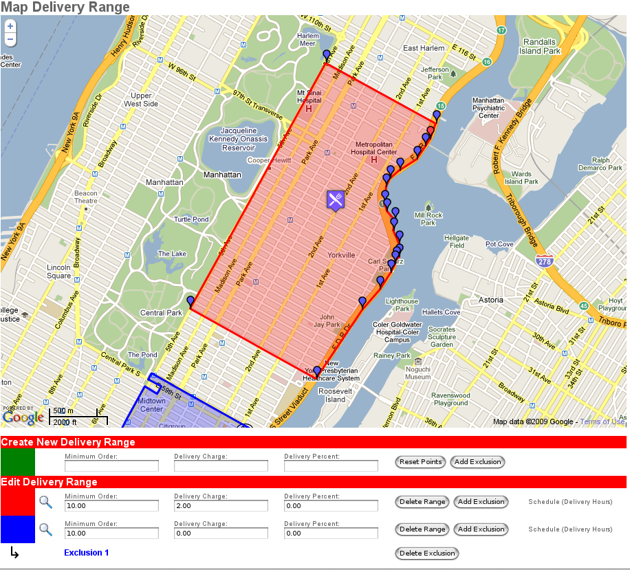

This document is just a rough outline on the new delivery range tool, it's features and its limitations.
For reference, here's a screenshot of the old delivery range tool:
Initial Load:
Here we see an example of the initial loading of a restaurant. This restaurant is Baluchi's (1724 2nd Ave).
The blue delivery range is actually for the 10022 zip code. The tool does not currently handle zip codes or other map types
but can easily be expanded to support them. The fancy little logo over the red polygon is the location of the
restaurant.
Bad Range:
When loading the map, it will automatically try to fit all of the delivery ranges into view. For most ranges this should give you a
fairly zoomed in view of the local area. If you load up a range such as this, it most likely points to an error. This particular example
is for Village Farm, which had ranges input for New York (under the icon) as well as a range out in Chicago (the little orange shape).
Selected Range:
Here I've selected Baluchi's delivery range. You can select any delivery range by clicking on the color of the polygon in the table below the
map. That will cause the map to load markers for each point in the polygon, which are editable by clicking or dragging. Because of the way
the old tool worked, polygons tend to have lots of points in them, but we don't need that many points. If you click on any of the little markers
in this polygon, it will be deleted. Below is a cleaned up example.
Selected Range (cleaner):

As you can see, by click-deleting superfluous points we have a much cleaner polygon. The original sample isn't wrong, it will still work,
but it takes a lot more to process and edit a polygon, so it's best if you use the tool to your advantage and only add the points that you need to
to make the range that you want. You can also click and drag points you've already added in order to change or edit the shape of a range.
Exclusions:
Here we have an example of an exclusion. The blue polygon defines the zip code 10022. The white space in the middle of it is an exclusion.
If this were a delivery range, that portion in the middle would not be serviced by it. Each exclusion that gets added goes in as a row
below the parent range by clicking the "Add Exclusion" button. The text will be in the same color of the polygon. Clicking on the text
(ie, "Exclusion 1") will load the points for that exclusion.
Exclusion Selected:
Here I have selected the exclusion for the blue range. Each of its markers loads and is editable just as the parent range is.
New Range:
Here I have drawn a new delivery range that we'll use as an example to describe some of the things going on in the tool. The first thing to notice
are the colors of the markers. This range has 3 markers that are blue and 1 that is red. Blue is just a point in the range, but the red
marker has the special meaning of "lead point", which is simply the last point added to the polygon. If you delete the lead point, the
next previous point will turn red to signify the lead point. Clicking on the map (anywhere but on a marker) will add new points to the polygon.
Where the new point goes depends on where you click. I'll describe more on this below.
Add New Point:
In this example, I've click just northwest (left of the rectangle) of the red point, which adds a new point to the polygon, extending it out to meet the new point.
Notice that the new point's icon is now red and the previously red point has turned blue, letting us know where the lead point is.
Add MidPoint:
In this example, I've clicked both above and to the right of the polygon. Since those clicks are closer to what we'll call non-lead point
sides of the range, it's added the points as "midpoints" to the existing line. These exist just like any other point in the range, but they
are grey to show their difference between other points. As long as they are grow you know they haven't been moved from the point you inserted
them. You can treat them like any other point, dragging it to the desired position or clicking
it to delete it.
Edit Midpoint:
Here I've simply moved the midpoints created in the last example. They've now been "graduated" to blue points, showing that they've moved
from their original position.
Errors:
The next few examples illustrate various things that you can technically do within the tool, but that result in bad delivery ranges.
As of this writing, I have nothing that actually checks for bad input such as this, but we will eventually have something to do this in place.
This is what's known as a "complex polygon". Any time a line of a polygon crosses another line in the same polygon, things start to get wacky.
Let's just say that wacky is bad in this situation, so this should be avoided at all costs. Sometimes when drawing polygons your lines will cross
as you are drawing, which is fine, but do not submit a polygon that crosses itself as complete.
Here is an example of a complex polygon as an exclusion. These are, likewise, verbotten.
Another bad thing to do is have an exclusion that breaks the boundaries of the polygon that it is in. Again, you can draw these sorts of things
with the tool, but that does not guarantee that the code trying to interpret them will be able to understand it, leading to broken delivery ranges.
Make sure any exclusions are inside the delivery range.
Overlap:
Here are Village Farm's maps. I provide this just as a sample of a finished range. Village Farm has a lot of overlapping delivery ranges.
The map tool displays those polygons as semi-transparent polygons and starts to blend the colors, so they may be a little off from what is
displayed in the table below it.
Other Notes:
- When you click on the range's color to load the points, it will also pan to the range if it's not currently visible.
- The pan uses the current zoom level, to get the whole range in the view, click the zoom icon